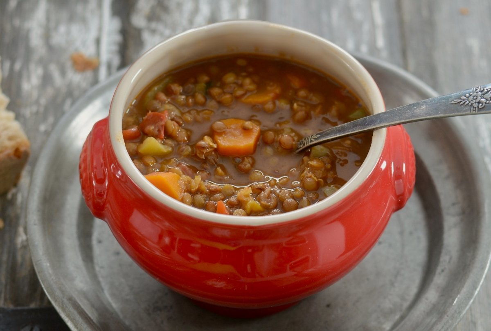

Lentejas

Se hacen de manera rápida y fácil, es además un plato muy versátil, abierto a todo tipo de variaciones y adaptaciones
y siempre estarán deliciosas. Admiten todo tipo de verduras, las que más nos gusten o las que tengamos en la nevera
y podemos improvisar un delicioso puchero, como hacían nuestras abuelas. Por supuesto, las podemos cocinar en olla
rápida, o en procesador, aunque yo soy una antigua y las sigo haciendo de manera tradicional y a fuego lento.
- 1 l de caldo de carne
- 250 g de lentejas pardina
- 1/4 cebolla
- ¼ pimiento morrón verde
- ¼ pimiento morrón rojo
- ¼ pimiento morrón amarillo
- ¼ de puerro
- Un trozo de apio (unos 15 g)
- 3 zanahorias
- 1 tomate natural triturado
- 2 ñoras
- 1 hoja de laurel
- Sal y pimienta al gusto
- 3 cucharadas de aceite de oliva
- Como siempre, pesamos y medimos los ingredientes y ponemos el caldo de carne a hervir si lo tenemos preparado previamente. Lavamos bien las lentejas y las ponemos en agua para que remojen un poco mientras picamos las verduras. Para la receta he utilizado lenteja pardina, y esta lenteja pequeña no la pongo tanto tiempo en agua como el resto de las legumbres.
- Empezamos picando las verduras finamente y reservamos. Aparte escaldamos las lentejas y para ello las ponemos en una olla, las cubrimos de agua y las acercamos al fuego. Cuando rompe hervor las escurrimos bien y las reservamos. Este paso podemos omitirlo, pero me gusta hacerlo para que no queden después tan oscuras.
- Ponemos la olla al fuego con un chorro de aceite y salteamos las verduras durante unos 5 minutos, cuidando que no se quemen.
- A continuación, añadimos el tomate, la ñora y el laurel, y finalmente echamos las lentejas bien escurridas. Con una cuchara de madera removemos todo y dejamos que se impregnen bien durante unos minutos.
- Le vamos echando el caldo hirviendo, las salpimentamos al gusto y las tapamos para que se vayan cociendo a fuego medio durante unos 40 minutos.
- Vamos revisando de vez en cuando que no se queden sin agua y movemos un poco la olla para que no se peguen al fondo. Si vemos que se secan mucho o si nos gustan más caldosas, podemos añadir un poco más de caldo caliente, que tenemos reservado. Pasado el tiempo, las probamos y si tienen el punto de cocción deseado las apartamos y dejamos que reposen unos 10 minutos antes de servirlas.
- Un trampantojo para los que tenemos niños y evitar las protestas por las verduras, es triturarlas antes de echar las lentejas, y nos quedará una especie de puré espeso. Añadimos las lentejas y continuamos el proceso de la misma manera. Podemos también añadir huevo cocido troceado si quisiéramos hacer un plato más completo y ya nos serviría de comida principal.